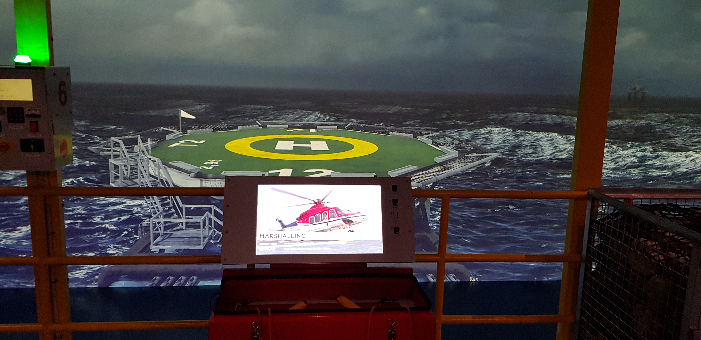
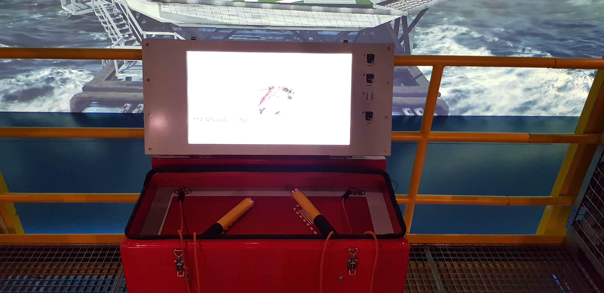
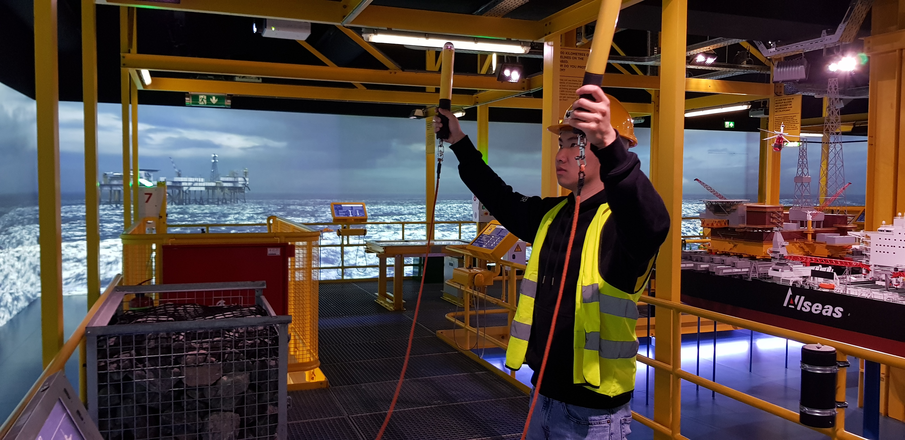
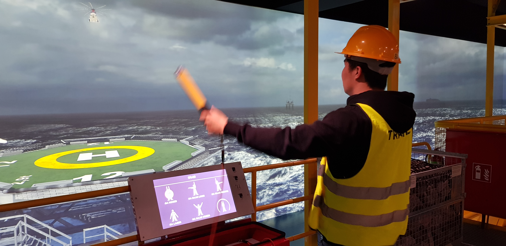
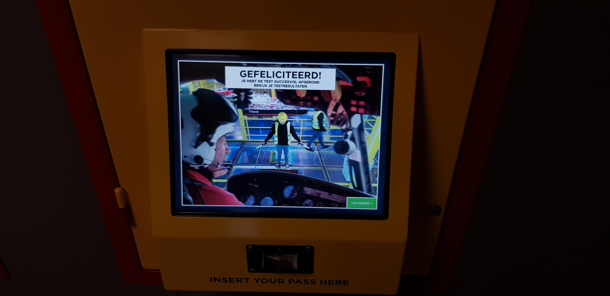

HCI Technologies
Portfolio
2022
Houwin
CMD-HT | HCI Technologies - Excursie
De excursie heb ik bij het Maritiem Museum gedaan. Een museum die ik altijd zie en langs loop, maar nog nooit binnen ben geweest.
Dus ik was benieuwd hoe het daar van binnen uit ziet en gelijk een prima keuze kunnen maken. De opdracht was om een
installatie op te zoeken die interacteert met de bezoeker. Maar wat versta ik onder een interactieve installatie, dat was
voor mij nog onduidelijk. Eigenlijk was daar alles wel een beetje interactief. Het drukken op een knop die vervolgens een output
genereert zoals het afspelen van een video of een persoon die praat, dat is in mijn ogen al interactief. Maar dat was voor mij
niet zo spectaculair. Na veel installaties gezien te hebben kwam ik eentje tegen die best interssant was en dit heb ik ook gekozen
als installatie.

De installatie was het laten landen van een helicopter. Dit deed je door gebruik te maken van twee staven die als richting wijzer dienden.
De twee staven moest je een aantal richtingen geven: omhoog, rechts, links, omlaag en nog een aantal andere richtingen om zo de helicopter
op het grote scherm/doek goed te kunnen laten landen op de helipad. De helicopter beweegt langzaam omlaag met de instructie van de gebruiker, de gebruiker geeft een richting
aan waardoor de helicopter ook dezelfde richting op gaat om zo het liefst in het midden te landen van de helipad.




De installatie doet mij denken aan een Wii. Met de twee staven kan je een beweging maken net als een Wii controller. En misschien, is de
techniek ook hetzelfde als bij een wii controller. Er kunnen accelerometers in zitten die de hellings- en rolhoeken meten,
door de richting van de zwaartekracht te meten. De data die de accelerometers ontvangen wordt omgezet naar instructies voor de helicopter.
Uiteindelijk heb ik veel genoten van de excursie bij het Maritiem museum al was de gekozen installatie soms niet zo nauwkeurig.
Bijvoorbeeld het aangeven van een richting werkte soms niet, waardoor ik overdreven een richting op moest wijzen of het gaf een ander richting aan dan
aangegeven. Voor de rest was de installatie zeker interactief, het was ook een simulatie spel wat natuurlijk interssant is.
Ik vind het ook een leuk experience; het dragen van een veiligheidshelm en een hesje.